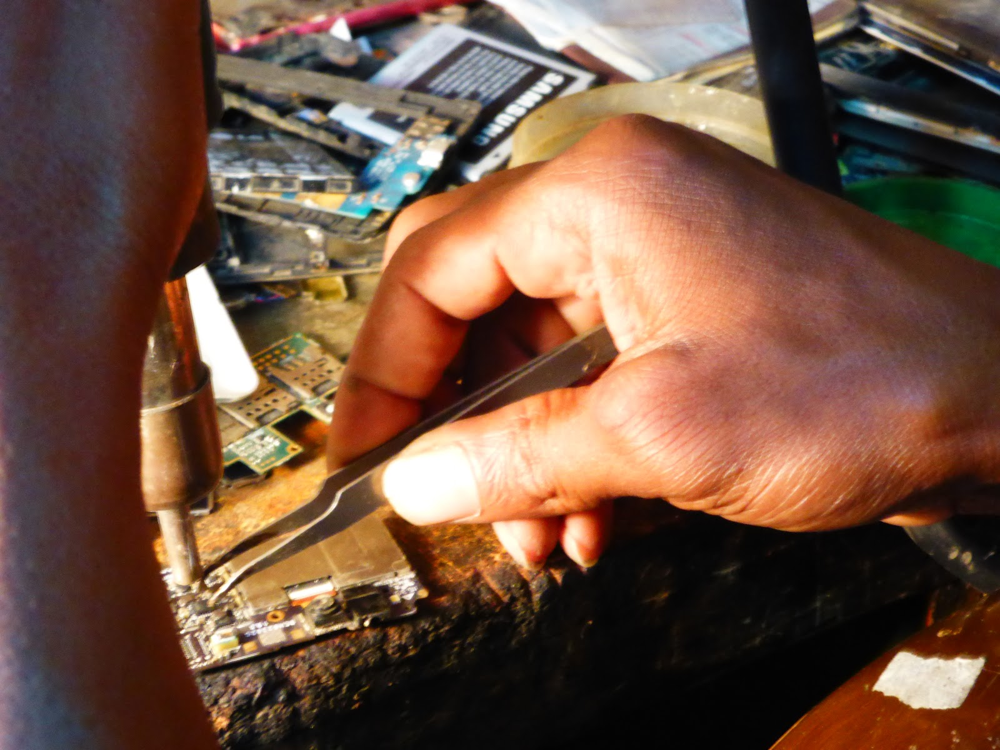
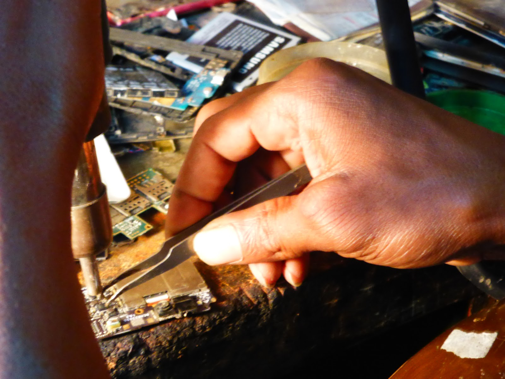

objektbiografie

reuse
Der internationale Gebrauchthandymarkt ist ein aufstrebender Markt. In Ländern des globalen Nordens spricht er Leute an, die nicht immer das Neueste besitzen wollen oder die von einem kleinen Budget leben müssen. In Ländern des globalen Südens stellte er bis vor Kurzem eine der einzigen finanzierbaren Möglichkeiten dar, sich ein Mobiltelefon leisten zu können. Seitdem chinesische Billigtelefonmarken begonnen haben, den afrikanischen Markt zu erobern, können sich zwar viele auch ein neues kaufen, aber dem Occasionsmarkt tut das keinen Abbruch.
Die Funktion des Gebrauchthandymarkts ist ambivalent: Einerseits profitiert er von der Wachstumsideologie, denn nur der schnelle Durchlauf garantiert Gerätenachschub, andererseits bietet er eine pragmatische Möglichkeit, die kurz getimte Lebensdauer eines Smartphones zu verlängern und somit dessen Durchlaufquote zu reduzieren. Viele Geräte, die sich in der Schweiz nicht mehr verkaufen lassen, gelangen über Zwischenhändler_innen, Verwandte oder Tourist_innen in Länder mit geringer Kaufkraft, insbesondere nach Süd- und Osteuropa sowie Asien und Afrika. Grundsätzlich gilt: Je schlechter das Gerät, desto weiter weg von der Schweiz wird es verkauft oder verschenkt. Viele defekte Geräte gehen nach China, wo sie instandgesetzt und in ärmere Regionen Asiens oder Afrikas weiterverkauft werden.

Mit dem Verweis auf einen „guten Zweck“ helfen offizielle Handyannahmestellen und weitere Occasionshändler_innen in der Schweiz, Menschen aus benachteiligten Regionen mit Mobiltelefonen auszustatten und den e-Waste im Norden zu drosseln bzw. in Richtung Süden zu verschieben. Oftmals kommt ein Grossteil des Verkaufserlöses einer Hilfsorganisation zu Gute. Die in Lausanne ansässige Handelsfirma Helvetrade beispielsweise arbeitet mit Terre des Hommes zusammen. Doch was genau mit den alten Smartphones im „internationalen Gebrauchthandymarkt“ geschieht, entzieht sich der Sorge oder Kontrolle. Kaum jemand kann Genaueres dazu sagen, wie lange diese Geräte wirklich noch im Einsatz sind, bevor sie zu giftigem Elektroschrott werden. Wie mit dem Dilemma umgehen, dass der „gute Zweck“ gleichzeitig zur Anhäufung von e-Waste führt, für den es in diesen Ländern noch kaum nachhaltige Lösungen gibt? Das Problem ist nicht neu, so führte der Auto-Occasionshandel beispielsweise dazu, dass Länder wie Senegal eine Einfuhrsperre verhängten. Deswegen kann das Problem nur dadurch angegangen werden, dass eine Lösung für den e-Waste gesucht wird. Denn alles wird zu Schrott, folgert «Tony Schrott», einer der e-Waste-Händler aus Lagos. Gerade deswegen ist für ihn dieses Geschäft so zukunftsträchtig: «Ich weiss schon jetzt, dass meine beiden tollen neuen Smartphones zu Schrott werden.»
„Der Handygebrauchtmarkt lässt sich mit dem Auto-Occasionsmarkt vergleichen: Nachdem der Markt gesättigt war, begann der Occasionshandel. Diese Situation ist in den westlichen Ländern eingetroffen. In der Schweiz beginnt er erst, hier kommen nur 1-2% der Handys in den Rücklauf, verglichen mit anderen Ländern, wo er 20-40% beträgt.“
RS Switzerland
Ökologie oder sich verändernder Markt?
Auch Firmen wie Samsung oder Apple steigen nun in den Gebrauchthandymarkt ein. Sie tun dies nicht aus ökologischen Gründen, sondern um im sich verändernden Markt mitzumachen.
Reparierbarkeit
Im Umgang mit dem Smartphone sind Alternativen schwierig. Es ist ein verleimter Minicomputer, dessen Reparierbarkeit und Recyclierbarkeit schwierig ist.
Dennoch kann man rund 15 Komponenten des Smartphones reparieren. Die Reparaturmöglichkeiten sind auch in der Schweiz in den letzten zwei bis drei Jahren rapide gestiegen. Es sind nicht mehr nur kleine, alternative Reparaturwerkstätten oder Online-Occasionshändler wie verkaufen.ch, die diesen Dienst durchführen. Mittlerweile ist es beispielsweise auch möglich, defekte Geräte in den Räumlichkeiten des Mobilfunkriesen Swisscom flicken zu lassen. Dies ist bemerkenswert, da Nachhaltigkeit ihrem Kerngeschäft – dem steigenden Verkauf von Neugeräten – widerspricht. Ihre besondere Leistung besteht im Gegensatz zu den kleinen Reparaturwerkstätten darin, dass sie von Firmen wie Apple konzessioniert sind. Bisher sind Garantieansprüche verfallen, wenn Leute ihr Gerät reparieren liessen. Auch punkto Reparierbarkeit versuchen also die Grossen mitzuhalten.

Am besten schneidet das Fairphone oder SHIFTphone ab, da seine Komponenten auswechselbar konzipiert sind. Auswechselbarkeit und Reparierbarkeit sind jedoch aufgrund der Abhängigkeiten von Produktionsteilen keine einfach einhaltbaren Versprechen. Das Fairphone 1 konnte beispielsweise wegen nicht mehr lieferbarer Ersatzteile und nicht kompatibler Software schon nach 2? Jahren nicht mehr nachgerüstet werden.
Die Lebensdauer eines Smartphones von 5-6 Jahren im Gegensatz zum prognostizierten und angepeilten Erstgebrauch von 12-24 Monaten ist nicht schlecht, insbesondere wenn man in Betracht zieht, dass die Kleinheit des Geräts relativ wenig elektronischen Abfall zurücklässt.
Obwohl das Smartphone als Durchlaufprodukt konzipiert ist, kann man es individuell also durchaus «ein bisschen» anders benutzen. Darin liegen Möglichkeiten, die das Smartphone trotz allem auch für die immer wichtiger werdenden, kollektiv gelebten DiY-Kulturen des Reparierens interessant machen. In diesen DiY-Kulturen werden die gemeinsamen Tätigkeiten des Flickens als Formen einer «Postwachstumsgesellschaft» verstanden, die auf spielerische und unasketische Weise das Leben im Überfluss relativieren.
 Chamankaufen, reparieren, verkaufen
Fribourgankaufen, reparieren, verkaufen
Lausanneankaufen, reparieren, verkaufen
Chamankaufen, reparieren, verkaufen
Fribourgankaufen, reparieren, verkaufen
Lausanneankaufen, reparieren, verkaufen
Wie verläuft der Gebrauchthandymarkt in der Schweiz?
In der Schweiz wickeln Firmen wie verkaufen.ch in Cham, RS Switzerland in Fribourg, Helvetrade in Lausanne oder Revendo (für Apple) mit Standorten in Basel, Bern, Dietikon, Luzern, St. Gallen und Zürich den Gebrauchthandymarkt ab.
Cham
In Cham bei Zug ist seit Ende 2012 die Firma verkaufen.ch tätig. Peter Oertlin, der vorher Ricardo Schweiz aufbaute, gründete sie zusammen mit einem Kollegen. Sie hat rund 13 Angestellte und ein Wachstum von 60-100%, d.h. das Geschäft läuft gut. Das Team von Times of Waste traf sich mit Peter Oertlin im Sommer 2016 zu einem guten und intensiven Gespräch.
1.1. Ankaufen
In der Schweiz arbeitet verkaufen.ch u.a. mit Sunrise, Post, Manor und Fnac. Daneben kaufen sie sowohl im In- als auch im Ausland Geräte an. Das können 200-2'000 Stück sein, je nach Situation, z.B. wenn sich eine Warenkette verspekuliert hat (zuviele Lagerbestände) und ihre Geräte nicht loswird. In der Schweiz gibt es diese Abverkauf-Situation weniger, da der Markt gesättigter ist und deswegen genauer kalkuliert wird. Die Schweiz ist für verkaufen.ch eher ein Ankaufsland.
Geräte, die verkaufen.ch nicht verkaufen resp. starten kann, gehen zur Swico-Partnerfirma Immark zwecks Recycling.
Bezüglich Datenschutz gibt es zwei Möglichkeiten:
- Das Gerät ist nicht ansprechbar/startbar, und somit ist der Datenschutz nicht realisierbar
- Jedes Gerät wird von verkaufen.ch in der Schweiz gelöscht (das heisst nicht nur zurückgesetzt, sondern Datenspeicher überschreiben) und dafür gibt es ein email-Zertifikat. Diesen Dienst (ISS Facility Service) bieten sie kostenlos an, die Konkurrenz (Apple etc.) mache das nicht.
1.2. Reparieren
vekaufen.ch wollte ein Convenience-Produkt anbieten und hat dafür Techniker_innen benötigt, die die Geräte überprüfen. Dadurch ist es möglich geworden, reparieren.ch anzubieten, obwohl das Reparieren nicht den Hauptteil des Geschäfts ausmache. Der häufigste Reparaturgrund ist das empfindliche Glas, das ca. 80-90% der Reparaturen ausmacht. Gemäss Herrn Oertlin ist es erst durch das viele Glas an den Geräten zum Reparier-Boom gekommen, vorher hätte es diese Reparaturangebote nicht gegeben.
3. Verkaufen
In der Schweiz verkauft verkaufen.ch die Geräte online über die eigene Website sowie an Zwischenhändler_innen, mit denen sie regelmässig zusammenarbeiten. Im Ausland haben sie zwei Hauptverkaufsbereiche: Balkan und Afrika. Der Balkan ist interessant, weil er nahe ist, aber nicht den gleichen Entwicklungsstand wie die Schweiz hat. In Afrika arbeiten sie v.a. mit Ländern wie Algerien, Marokko, Südafrika und Uganda. Da das Volumen zu gering ist, unter 3'000 Geräten pro Monat, läuft der Export mehrheitlich über Zwischenhändler, die die Geräte auch direkt ausführen.
Von den Zwischenhändlern, mit denen sie arbeiten, lebt oft eine Person in der Schweiz, die andere im jeweiligen Land. Diese kaufen nicht nur Smartphones an, sondern überhaupt Elektronikartikel. verkaufen.ch hat beispielsweise im Verwaltungsrat jemanden, der Solarsysteme für den Haushalt nach Afrika verkauft. Mit diesen kleinen Panels hat man Elektrizität im Haus und kann somit auch ein Smartphone aufladen. Die Mobiltelefonie ist wichtig in Afrika, da die Infrastrukturen für das Festnetz oder Internet im Gegensatz zu den Mobilfunkantennen nicht gut ausgebaut sind. Deswegen funktioniert vieles über Mobiltelefonie. In über zehn Ländern werden die Banktransfers beispielsweise werden per sms gemacht, da es kein e-banking gibt. So entstehen dort auch andere Bezahlungssysteme, ein Phänomen, auf das offenbar nun auch Apple-Pay aufsteigen will. Zentral ist das sogenannte „Erfolgsmodell“ aus Kenya, wo der britische Mobilfunkanbieter Vodafone und seine Tochter-Forma Safaricom Mitte 2000 das erste mobile Bezahlungssystem M-Pesa lancierten. Heute findet weltweit jede zweite Geldtransaktion in Kenya statt.
(Quelle: NZZ, 16.12.2018: https://www.nzz.ch/international/der-weltmarktfuehrer-aus-afrika-ld.1338079
„Der Zustand der Geräte ist deckungsgleich mit der Lebensqualität und Kaufkraft, die die Leute haben. In den Schwellenländern bzw. in Afrika sind Prestigemarken wichtig: Apple (das können sich allerdings die wenigsten leisten), Samsung. Sony hat keinen Markt. Als Statussymbol hat das Smartphone in bestimmten Ländern die Uhr abgelöst.“ (verkaufen.ch)
Fribourg
RS Switzerland ist der Schweizer Zweig der Recommerce Group, eines europäischen Anbieters für Occasionsgeräte mit mehreren europäischen Standorten und Hauptsitz in Frankreich seit 2009. RS Switzerland ist seit Ende 2014 in Fribourg tätig, country manager Schweiz ist Jérôme Grandgirard. Das Geschäft läuft gut, der Markt hat grosses Potential. Gemäss Deloitte werde der weltweite Occasionsmarkt 2020 13% ausmachen, heisst es auf der im Dezember 2017 lancierten Online-Shop-Website von RS Switzerland. Das Team von Times of Waste traf sich mit Jérôme Grandgirard und Romina Hofer im Sommer 2016 zu einem spannenden und offenen Gespräch.
2.1. Ankaufen
Die Partner von RS Switzerland sind Swisscom, die auch mit M-Budget zusammenarbeitet, sowie Orange, SFR, Samsung, Blackberrry oder Allianz. Versicherungen sind für die Zukunft auch deswegen als Partner_innen interessant, da es einen steigenden Bedarf gibt, ein altes Handy versicherungstechnisch nicht durch ein neues, sondern durch ein altes zu ersetzen. Die Beiträge werden dann für die Kund_innen billiger, und die Versicherung kann sich als ökologisch bewusst darstellen. Die Recommerce Group (nicht nur RS Switzerland) kauft pro Monat 50'000 Geräte an, in der Schweiz sind es viel weniger, da hierzulande die Geräte eher gehortet als verkauft werden. In Ländern wie Frankreich oder Spanien sei der Markt schon seit 5 Jahren gut. In der Schweiz beginnt er erst. Gemäss der Aussage von J. Grandgirard wollten 60% der (mitteleuropäischen ?) Mobilfunknutzer_innen immer das neueste Gerät besitzen. Diese Leute seien für die Recommerce Group interessant, weil sie sogenannte „Lieferkund_innen“, also Anbieter_innen, sind.
Der Ankauf bzw. die Rücknahme der alten Smartphones geht in zwei Schritten vor sich: 1. Schritt:
- Rückgabe im Verkaufs-Shop
- Online
- Rücknahmelösung von Firmen: Hier gibt es theoretisch weiteres Potential, da viele Firmen ihre Mitarbeiter_innen standartmässig alle 2 Jahre mit einem neuen Gerät ausstatten.
- Telefonmarketing
2. Schritt:
Die Geräte werden zur Bearbeitung an den Lab-Partner réalise in Genf geschickt: Diese Firma registriert, testet und teilt die Geräte in 4 verschiedene Kategorien ein:
- Premium (Topp-Zustand)
- Standard (mehr Kratzer)
- Geräte für den Export: Diese Geräte haben für den Verkauf in der Schweiz keine Chance. Sie sind eigentlich funktionsfähig, aber zu altmodisch (z.B. Nokia etc.) oder haben kleinere Defekte, z.B. einen zerschlagenen Bildschirm.
- Kaputte Geräte: Diese gehen an einen Swico-Partner zum Recycling.
Réalise löscht die Daten und installiert neue Software, ausserdem informiert es über eine Real-Time-Software das Büro in Fribourg über die hereinkommenden Geräte.
2.2. Reparieren
RS Switzerland führt in der Schweiz keine Reparaturen statt. Es ist zu teuer und das Volumen zu klein. Die reparaturfähigen Geräte werden gesammelt, nach Frankreich transportiert und dort repariert. Für diese Reparaturen gibt Recommerce eine Garantie von 1 Jahr. Gemäss dem Geschäftsführer Herrn Grandgirard sei das wichtig, damit man den Occasionsmarkt ernst nehme und sehe, dass auch ein Occasionshandy gute Ware sei. Ausserdem werden damit auch die durch Apple forcierten Konzessionen hinfällig. Apple verbietet ja die Reparatur durch nicht-konzessionierte Betriebe bzw. streicht in solchen Fällen einfach den Garantieanspruch.
2.3. Verkaufen
60% der zurückgenommenen Geräte sind Premiumqualität. Diese Geräte bietet RS Switzerland den Privatkund_innen über die M-Budget-Website an, seit Dezember 2017 hat sie auch eine eigene Website. Grundsätzlich hätten sie in der Schweiz zu wenig im Angebot, d.h. es gibt mehr Interessierte als Ware, dasselbe Problem herrsche auch in Frankreich.
25% der Geräte sind Standard. Diese werden z.T. in der Schweiz verkauft, das sind rund 20 Händler, v.a. kleine Reparaturläden (Diese nehmen auch Kategorie 3). Der Rest geht nach Frankreich ins Muttergeschäft. Dort kaufen sie verschiedene Händler an, die sie in verschiedene Länder weiterexportieren. Das wird so gehandhabt, weil das Volumen in der Schweiz zu klein sei.
15% der Geräte haben eine schlechte Qualität: Diese gehen im Westentlichen nach Frankreich in den Mutterkonzern, und von dort neben Spanien, Portugal, Deutschland, Grossbritannien und verschiedenen Ländern in Afrika meistens nach Asien, vor allem nach Hongkong. Die Hongkonger Händler sind für die Recommerce Group interessant, weil sie sehr grosse Mengen nehmen. In Hongkong gibt es zudem eine Börse, die täglich die Preise für die verschiedenen Smartphones durchgibt, sowohl für die gebrauchten als auch für neue.
Lausanne
Helvetrade ist eine Handelsfirma in Lausanne, die verschiedene Tätigkeiten im Bereich Mobiltelefonie unternimmt. Wichtiger Teil ist die Reparatur und Instandsetzung sowie der Verkauf von Occasionsgeräten. Eines der Ziele ist es, benachteiligte Regionen mit Mobiltelefonen auszustatten und dem riesigen Durchlauf an Geräten etwas entgegenzusetzen. Ein wesentlicher Teil des Erlöses geht an Terre des Hommes. Das Team von Times of Waste führte im August 2016 ein Telefongespräch mit dem Geschäftsführer.
3.1. Verkaufen
Helvetrade ist ein kleines Geschäft, das ca. 500-600 Mobilfunkgeräte pro Monat exportiert. Auch sie arbeiten mit Zwischenhändler_innen, die aus den Ländern stammen, in die sie die Geräte liefern. Vor 7-8 Jahren lieferten sie vor allem nach Pakistan und Hongkong, von wo die Geräte in die armen Regionen von China gingen. Diesen Markt beliefern sie nicht mehr, das änderte sich. Nun exportieren sie nach Westafrika, insbesondere nach Mauretanien, Mali, Burkina Faso und Togo. Der Handel gestaltet sich über ein kleines Netzwerk von afrikanischen Leuten, die in der Schweiz leben oder mit Leuten aus der Schweiz verwandt oder bekannt sind. Diese bringen die Geräte auf lokale Warenmärkte, auf denen u.a. auch Smartphones verkauft werden.

Der Gebrauchthandymarkt in Westafrika
Viele Wege der Gebrauchthandys führen nach Westafrika. Eine der Hauptachsen führt von Mitteleuropa über Südosteuropa oder direkt nach Westafrika. Eine andere kommt von China – insbesondere von Hongkong oder Guangzhou, wo kaputte Geräte instandgesetzt werden. Afrikanische Händler_innen kaufen an diesen Orten Geräte an und transportieren sie – oftmals via Dubai – nach Westafrika. In Städten wie Dakar, Gao, Bamako, Ouagadougou, Lagos oder Accra gibt es ganze Stadtteile, die dem Handel mit Elektronikgeräten gewidmet sind. Da werden auch gebrauchte oder kaputte Mobiltelefone auseinandergenommen, repariert und weiterverkauft. Viele junge afrikanische Männer haben sich durch ihre ausgefeilten Reparatur-Arbeiten an so schwierigen bzw. «unmöglichen» Geräten wie Smartphones eine grosse Kompetenz als «Smartphone-Doctors» erarbeitet, auf die sie zu Recht stolz sind.
In Afrika erobern zunehmend chinesische Billigmarken den Markt. Firmen wie Tecno Mobile beispielsweise setzten im Jahr 2008 vollständig auf den afrikanischen Markt, seit 2017 auch auf Südostasien, wie Indien, Bangladesh oder Pakistan. 2016 lancierte die chinesische Firma InnJoo ihr Smartphone in Lagos, weitere Firmen folgten diesen Beispielen. 2012 fertigte Tecno Mobile das erste Smartphone «Made in Ethiopia». Diese Marken erlauben es, dass sich nun viele Leute auch ein neues Gerät leisten können. Allerdings wird dann beim Garantieangebot gespart. Wie sowohl die Filme von Daniel Kötter aus Lagos als auch die Texte von Mohomodou Houssouba aus Bamako, Gao und Ouagadougou zeigen, können neu gekaufte Geräte mit Fertigungsfehlern nicht umgetauscht werden. Solche Geräte landen deswegen ebenfalls in den Elektronikvierteln dieser Städte, wo sie neben den vielen gebrauchten (Schrott-)Geräten repariert werden.
Gemäss David Signer, in Dakar lebender Afrika-Korrespondent der Neuen Zürcher Zeitung, ändert sich in der aktuellen IT-Situation in Afrika informationstechnisch vieles. Es gibt Hackerszenen in Nigeria, und insbesondere Kenia sei technisch avanciert. Aber letztlich dominierten die Chines_innen das Smartphone- und IT-Feld. Viele Afrikaner_innen seien zwar kreative User_innen, aber machtvolle IT- und Ingenieurs-Kompetenz müsse erst noch aufgebaut und systematisiert werden. Es fehle an technischen Ausbildungsmöglichkeiten, die den State-of-the-Art vermittelten. Schon im Auto-Occasions-Markt hätte Afrika grosse Skills im Reparieren entwickelt. Es zeige sich mittlerweile aber, dass die Computerisierung von Autos und die Monopolisierung der Ersatzteile diese Kompetenz überflüssig machen werde.
Ouagadougou, Gao, Bamako
Mohomodou Houssouba
Über seinen Artikel «Mit dem Handy die Welt erobern», zur Mobiltelefonie und Kreativität in Mali (NZZ 28. Mai 2016), lernen wir den Schriftsteller und Literaturwissenschafter Mohomodou Houssouba kennen. Er stammt aus Mali, lebt in Basel und versucht seit rund zehn Jahren, Online-Tools, Wikipedia-Websites u.a. in der malischen Landesprache Songhay zu entwickeln. Seine Forschungsarbeiten führen ihn regelmässig nach Westafrika, wo er ein grosses Beziehungsnetz aufgebaut hat. Bei einem gemeinsamen Treffen im Sommer 2017 vereinbaren wir, dass er während seines nächsten Forschungsaufenthalts den Gebrauchthandymarkt in Bamako und Gao (Mali) sowie in Ouagadougou (Burkina Faso) für Times of Waste weiter erkundet.
Contributions from observations on the ground in West Africa
Author: By Mohomodou Houssouba
Location: Mali: Bamako/Gao
Topics: waste generally/repair, reuse, buying-selling/ energy supply, battery as key component
I arrived in Bamako in the afternoon of September 11, 2017. I took an early flight out of Basel, then spent a short layover in Paris. I flew out of Charles De Gaulle Airport at 10:00 am. We were supposed to land at 13:45, but our flight would be delayed by more than a half hour. Then, getting out of the airport hadn’t been straightforward either.
DOWNLOAD FULL ESSAY AS PDFSmartphone doctors in the back streets of Quartier Koulouba in Ouagadougou/Burkina Faso
Author: By Mohomodou Houssouba
Location: Burkina Faso: Ouagadougou
Topics: repair / buying-selling
Nowadays, the simple mention of the name Koulouba makes one think systematically of the imposing buildings housing the presidency of Burkina Faso, the hotel Indépendance, some banks and foreign consulates, for example. This is an oversimplified image of a far more complex reality at both human and physical levels.
DOWNLOAD FULL ESSAY AS PDFIn the waiting room of the smartphone doctor
Chez Ibrahim Adjamé, Washington Market, Gao
Author: Mohomodou Houssouba
(Based on notes from my last stay in Gao, 21 September - 9 October 2017)
Location: Mali: Gao
Topics: v.a. repair
Right after my arrival in Gao, I inquired about telephone repair shops in town and found out that my research assistant knew places of different levels of skill. Most are located in the two markets downtown. So I followed him the next day. Gao counts two central markets where most trading still gets done. …
DOWNLOAD FULL ESSAY AS PDF 

Guangzhou
Im Frühjahr 2017 kam es zu einem Austausch mit dem Forschungsprojekt chinafrika. under construction (chinafrika.org) von Jochen Becker und Daniel Kötter. Dieses Projekt untersucht die vielfältigen Beziehungen und Routen zwischen China und Afrika. Bei einem Treffen mit dem in Berlin lebenden Künstler und Filmer Daniel Kötter zeigte sich, dass er unter anderem auch jene Orte filmen wollte, an denen das Team von Times of Waste interessiert war: Orte, wie Guangzhou oder Lagos, die auf ihre je spezifischen Weisen den Gebrauchthandymarkt konstituieren. Oder ein Ort wie Kalwezi in der DR Kongo, in dem Kupfer abgebaut wird. An allen diesen Orten ist es schwierig oder verboten zu filmen. D. Kötter hatte bereits Vorabklärungen getroffen und sah vor, in schwierigen Fällen vertrauenswürdigen Händler_innen und Schürfern selbst ein Aufnahmegerät zu geben. Ihm fehlte noch das Kleingeld, um die Vermittler zu bezahlen. Times of Waste sprang ein, im Gegenzug sollte Daniel Kötter einige seiner Filme auch im Hinblick auf die Interessen von Times of Waste aufnehmen. Er stellte sie dem Projekt als Rohmaterial zur Verfügung.